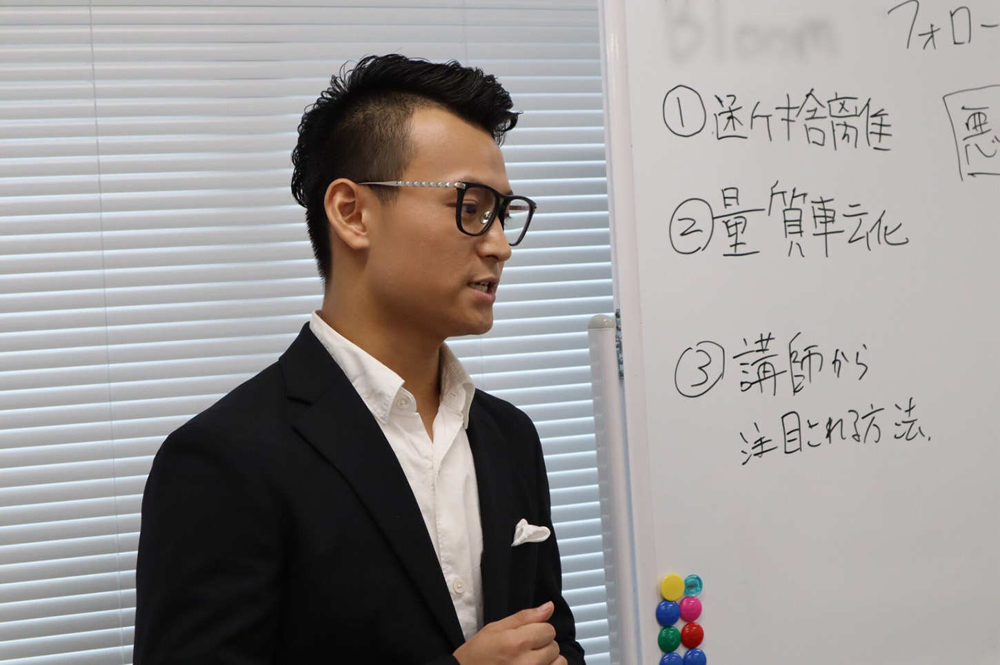
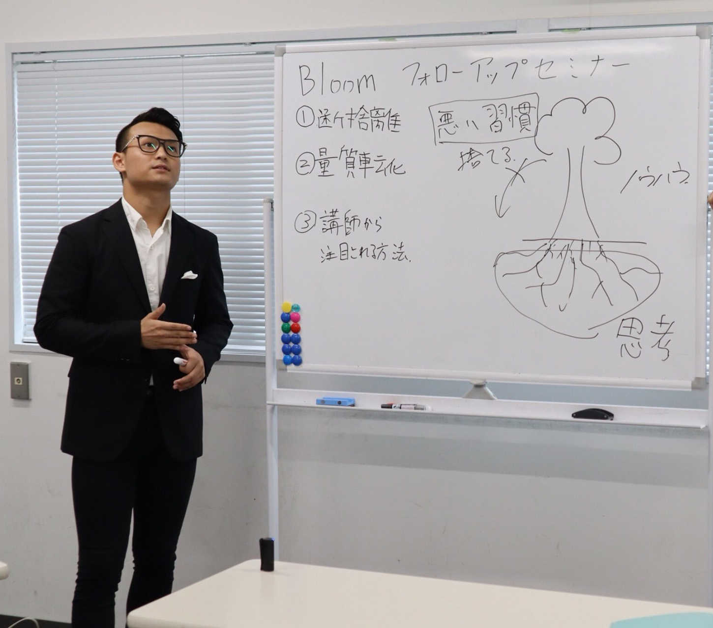
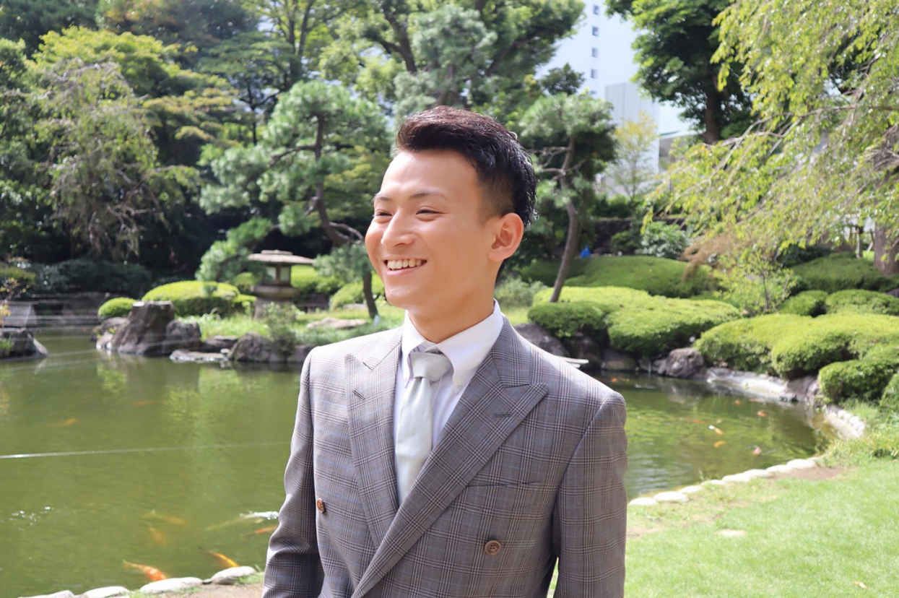

| 10年後に後悔しない「最高の人生」の選び方 | |
| 峯吉浩介 | |
| Hitotsuku Publication (2018) | |
はじめまして。峯吉浩介です。この度は、本書を手に取っていただき、誠にありがとうございます。
自分はこれからどんな人生を歩んでいきたいだろう？
誰しも一度は考えることだと思います。
進学、卒業、就職、転職、結婚......。さまざまなタイミングで、人は自分の人生を考えます。ときには、人から聞かれることだってあるでしょう。
今あなたはどうですか？「こう生きたい！」と、自信を持って、具体的に、人に言えることがありますか？
......。
って、すぐには分からないですよね（笑）。無理を承知で聞いてみました。申し訳ございません。
多くの人が、自分の人生をそこまで考えずに生きています。当たり前ですが、未来のことは誰も分かりません。聞いた私自身も、先の人生のことは、全く分かっていませんし、ある種の不安があります。
不安だからこそ、毎日たくさんのことを考えながら、生活をしているくらいです。
どう生きたいかは分からなくても、生活に関して言えば、普通に働いて、生活できるだけのお金を稼いで、いずれは結婚して、子育てを頑張って、定年退職してからゆっくり老後を過ごして......。このくらいの生活をしたいと考えている人が、たくさんいると思います。
少し踏み込んで言えば、自分が育ってきたくらい、もしくはそれ以上の生活をしたい、と考えている人が多いのではないでしょうか？
今までの経験から、自分の将来をイメージするのは普通のことですし、私も、そうやって自分の人生を、今まで考えてきました。だから、そのイメージをするだけでも、何も考えていない人に比べれば、十分ではないかと私は思います。
しかし今の世の中、多くの人が自分の生き方に悩み、生きることに大変さを感じています。時代と共に、さまざまな選択肢が生まれてきているからこそ、「自分はどう生きるのか？」を考える瞬間が増えてきているのです。
ここで少し自己紹介をさせていただきますが、私は現在、起業家として、アフィリエイト、投資、不動産、出版、コンサルティングなど、多くの事業を行っています。自分の仕事を通して、目まぐるしく変わる時代の変化、生活スタイルの多様化を、身をもって感じている、今日この頃です。
22
歳で、まだまだ若い私ですが、働くことの大変さ、生きていくことの難しさ、世の不条理さを感じる場面が、これまでに何度もありました。
しかしそんななかで、「自分の気持ちに正直に生きる」
ことで、人生は劇的に変えられると、私は知りました。勉強もできない、スポーツも全然ダメ、人間関係もうまくいかない......。そんなグズだった私でも、自分の気持ちに正直になれたことで、何のしがらみもない、ストレスフリーな生活を、手に入れることができたのです。
私は、人生とは、ＲＰＧ
のようなものだと考えています。
人生は、順風満帆に進んでいくことはなかなか難しく、前進するためには、数々の困難に立ち向かい、壁を乗り越えていかなければなりません。何の試練もなく、きれいな景色を迎えることはできないのです。だから、ハッピーエンドを見たければ、進んでいくなかで、自分自身が成長していかなければいけません。
しかし、どうやってそのＲＰＧを進んでいけば良いのか分からない人が、この世の中にはたくさんいます......。そんな人たちのためのＲＰＧ攻略本を作ろうと思い、私はこの本の出版を決めたのでした。
本書では、「なぜ今、人生を考えなければならないのか？」「働くとは何なのか？」「これから行動していくには、どんな意識を持つべきなのか？」「自由な人生を歩いていくためにはどうすれば良いのか？」を、私の経験をもとに書かせていただきました。
「個性はいらない」「道を逸れずにみんなと足並みを揃えて進め」「出る杭は打たれる」といった風潮が、色濃くはびこる日本で、どう力強く生きていくのか。私の思いを、惜しみなくあなたにお伝えしていきます！
本書を通して、これからの自分自身を考え、行動に対するバリアを取り払うきっかけになりましたら、これに勝る喜びはありません。
そして、あなたが自分のやりたいことに挑戦していき、楽しい人生を歩むことができましたら幸いです。

これから、なぜ人生を今考えるのか、あなたにお伝えしていきます。
まずは、主人公である自分自身を知ることから始めましょう。なぜなら、自分を知ることが、これから行動していくための一歩になるからです。
ゲームでも、主人公が分からなければ、進んでいけませんよね？ だから、主人公であるあなたが、一体どんな人間なのか、あなた自身が理解してみることからスタートです。
〝自己分析〟
は、あなたも一度はしたことがあると思います。「学校の先生に言われたから」「進路を決める上で、やらなきゃいけなかったから」など、自分本位でやらなかったこともあるかもしれません。
普通、自己分析をするとなると、小さい頃は何が好きで、学生時代は何に熱中して、学校で何を学んで......と、振り返っていくのが一般的です。もちろんこれは間違っていませんが、もっと自分を知るためには「どれだけ感情を深堀りできるか」が、実はかなり重要になります。
私のことを例に、少しお話しさせていただきますと、私はいわゆる〝中途半端〟な人間でした。遊びも勉強もそれなりにやる程度で済ませて、情熱を持って何かをやることがなかった幼少時代でした。
ただ中学受験のとき、一時勉強に燃えて、故郷の広島県の難関校に受かるため、必死に勉強をした時期がありました。しかし、その甲斐なく受験には失敗し、勉強にコンプレックスを抱えるという経験を、私は味わったのでした。
結局そのコンプレックスは拭い切れず、高校受験にも失敗してしまいました。
劣等感を抱えながらも、めげずに勉強を頑張って、その後大学にはかろうじて合格できました。でも、大学では周りについていけず、留年するという末路までたどってしまったのでした......。
はたから見ると、とてもみじめな人生、ですよね。親や親戚はじめ、周りの人を裏切ってばかりだった現実が、私にはとても辛かったです。でもその感情が、「自分を変えよう！」と、思い始めたきっかけでもありました。
このように私は、自分の学習面での経験を振り返って、「自分は中途半端な人間だ」と、知ることができました。正直、感情を分析しすぎて、そのとき抱いた感情を今思いだしてみても、どこかやるせなくなります（笑）。
つまり、自分自身を理解し、認めることができれば、それがこれからの行動につながっていくのです。
例えそれが、人には見せられない恥ずかしいことでも、自分の胸にだけ秘めておけば、行動しようとする原動力になります。そうなれば、私のように恥ずかしい過去も話せる日がいつか絶対に来ます。もちろん、無理に話すことでもありませんので、あなたはそこまで気にしなくて大丈夫です（笑）。
過去の出来事と、そのときの自分の感情を、どれだけ思い出し自己分析できているか。まずはこれを考えてみてほしいです。もし少しでも「足りないな」と感じたら、今すぐ自分の経験を、具体的に深堀りしてみてください。
自分のことが分かったら、次は仕事のことを少し考えてみましょう。ゲームでも、最初に自分の役割やジョブを選びますよね。言ってしまえば、それと同じことです。
仕事を考えることは、これから生きていくうえで、非常に重要です。今何かの仕事をしていても、これから就職するでも、なぜ今の状態になっているのかを、あなたはじっくり考えたことはあるでしょうか？
「働いて、お金を稼がないと生きていけないから、そんなの当たり前でしょ？」「学校を卒業したら、仕事するのが普通だし」「みんな就活してるし、自分もやらないといけないし」......。もちろんその通りです。実際、世の中の多くの人が、会社員として働いていますし、日本でもそう教育されて、人は成長していきます。
しかし、その道を歩むことで、現代社会で働く多くの人が苦しい思いをしている、という事実もあります。「自分の好きなことだと思って入社したら、思っていたのと全然違った」「人間関係が辛い」「働いても働いても、全然お給料が貰えない」......。こういうことは、本当によくあるのです。その苦しさに、命を絶ってしまう人もなかにはいます......。
「そういうものだから」と、諦めてしまっている声も、正直よく耳にします。ですが、本当に「そういうもの」なのでしょうか？ 生きるために働くこと、仕事をしてお金を得ることが、苦しくて辛いものなのでしょうか？
働き方の多様性が叫ばれている現代では、自分に合ったスタイルで働く人も、たくさんいます。好きなことで収入を得て、好きな時間に、好きな人と仕事をする。理想の働き方ですよね。
でもそういった生き方をしている人たちは、もともと自由な環境があったから、好きに働けているわけではありません。自分のやりたいことを求め、とことん追求して行動した結果、手に入れられた環境なのです。
だから、その方法を知っているか知らないか
、言ってしまえばこれだけです。
働き方については、第２章で詳しくお伝えさせていただきますが、自分の「働く」
を考えることが、まずは大切になります。
会社は、あなたが辞めてもまた動いていきます。一人入ろうが、一人辞めていこうが、正直痛くもかゆくもありません。
「就職して働く」ことだけが道ではない。そこでキツイ思いをして、過ごし続けることが、超えるべき試練ではない。そう思えるように、今から気持ちを変えていきましょう。
よく、自分の好きなことをして、お金を稼いで生きていく話をしていると、「いや、自分には大丈夫です」「普通に生きていければ、それで十分なんで」「そんな冒険しなくてもいいです」という声が挙がります。
確かに、今無理なく生活できている状態があるならば、その状態を変えてまで何かにチャレンジしようとは思いません。チャレンジには、〝リスク〟も当然ありますし、今の自分の生活が消えてしまったら、それこそ「どうしたらいいんだ......」という話ですからね。
でも、よくみんなが言うこの〝普通〟とは、一体どういったものなのでしょうか？ 少し考えてみましょう。
はじめに、のところでも少しありましたが、衣食住がしっかりあって、子育てもちゃんとできて、老後も不自由なく過ごせる、これがいわゆる〝普通〟の生活だ、と私は思っています。もっと言えば、よくドラマで描かれるような一般家庭の生活、祖父母や両親がしてきた生活。これが普通だと、あなたは考えているのではないでしょうか？
でも、酷なことで申し訳ないのですが、「今の時代では、そんな生活を送るのは無理だ」と私は言いたいです。
その要因としてまず、昔に比べて物価が上昇しているのに、お給料がそれに見合った上昇をしていない
という点があります。
お給料がそのままなのに、物の値段が上がれば、当然お金は貯まりません。貯めようと節約して頑張っても、生活費がかさむ一方では、貯金が増えるまで長い時間がかかるでしょう。
お金がなければ、マイホームやマイカーも買えません。それに、それらを買っても、維持するためにまたお金がかかります。これは、まさに負の連鎖です。
加えて、老後に貰える年金
に関しても問題があります。
少子高齢化が進行中の現在では、老人一人の年金を支えるための、現役世代の数が全く足りていないと言われています。今でさえこんな状況なのに、私たち20
代が年金をもらう年齢になったら、世の中はどうなっているでしょう？ 年金がもらえない可能性も大いにありますよね。年金がないとなると、老後も安心して暮らせる保証は、当然ありません。
他にも、要因を挙げればきりがありませんが、要は親世代のマネをして、〝普通〟の生活しようとしても、今の時代ではもう不可能なのだ
、とあなたに訴えたいのです。「高学歴＝高収入」「会社のお給料だけで家族を養える」「老後も年金がある大丈夫」というのは、もう昔の話です。
「不安を煽りに煽って、じゃあどうすればいいんだよ......」と、思われたかもしれません。だからこそ、自分の力で稼げるスキルを身に付ける
ことが、今後必要不可欠になるのです！
副業でも、投資でも、何か自分のやりたいことで稼ぐでも、自分の力で生みだせるものなら、何でも構いません。目の前の「自分が働く」ことだけではなく、この先何が重要であるかを、今すぐ考えてみてください。
少し暗い話が多くなってしまいましたが、これまでと同じように生活していくのが難しいのは、紛れもない事実です。
「これじゃ人生なんて、ＲＰＧなんかと違って、無理ゲーじゃないか......」と感じるかもしれません。
しかし、その無理ゲーをクリアしていくための手段は、ちゃんと存在しています。その手段こそが、「自分の本音」に逆らわず、正直に生きることなのです。
自分がどんな人間なのかを知り、自分がどうしたいのかが見えてきたら、その気持ちを胸に、小さくてもまず行動を起こすこと。これがハッピーエンドへの第一歩になります。
簡単なのは、自分の悩みをもとに、自分の本音を探ることです。例えば、あなたが仕事のことで悩んでいたとします。自分が悩んでいる原因が、お給料なのか、職場の人間関係なのか、やるべき業務の大変さなのか。一概に「これだ」と決めつけられなくても、自分が憂鬱になっているのには、発端が必ずあるはずです。もちろん、これら以外にも原因はあるかもしれません。
そして原因が分かったら、それが「自分の行動で変えられるか」を考えてみます。小さいことでも構いません。ここで決して、「やりたくないことも耐えて、我慢して生きていくしかない」と考えないでください。
そうやって行動するべきことが分かれば、あとは実行に移るだけです。
自分が動くことで心が楽になるなら、失敗やリスクを恐れず、チャレンジをすることが本当に大切になります。例え失っても、また取り返せる。
そう考えれば良いのです。
ちなみに私は、大学の頃の生活が自分のストレスになっていました。昔から勉強に挫折してばかりで、親の思いにも応えられず、お金を無駄にしてばかりだった自分が、本当に辛かったのです。
そんな悩みや、暗い感情から抜け出すために、私は「自分の本音」に正直になって、ビジネスを始めるという行動をしていきました。「やった後悔」よりも、「やらなかった後悔」の方が、後でズシッと自分にのしかかると私は思っていたからです。だから、そのまま気持ちに逆らわず、前へ前へと進んでいけたのでした。
身をもって体験した今の私だからこそ、忍耐しながら生きるより、自分の気持ちに逆らわずに行動した方が絶対に後悔しない
と、強く訴えたいのです。
「今のままで大丈夫」とよく言いますが、現状を変えないことは、実は退化していることと同じになります。
だから、自分が楽しく人生を歩めるように「今を変えていこう！」と、進んでいくことが必要不可欠なのです。しかもそうやって得られたものは、経験値になって一生自分のなかに残っていきます。
あなたも失敗を恐れず、自分の気持ちを信じて、今を変えようと行動してみてください。最初はうまくいかなくても、行動したことがあなたの明るい未来を作っていくのです！
以上が第１章になります。自分で何かチャレンジしてみようと、少しは感じられましたか？
次の第２章では、「働くとは何なのか」についてあなたと考えていきます。

ここからは、自分の働き方、つまり「お金の稼ぎ方」
について考えていきしょう。
まずあなたに質問なのですが、あなたはお金を稼ごうと思ったら何をやるでしょうか？
当たり前ですが、お金を得るには何かをしなければなりません。ですが、その方法をどれだけ知っているでしょうか？
いかがでしょう？ いくつ出てきましたか？
第１章にあったように、どこかの会社に雇ってもらって仕事をする。自分で何か業を起こす。どこかにお金を投資して稼ぐ......。少し考えてみても、お金の稼ぎ方は、いろいろありますよね。
しかしそのなかには、今すぐできることとできないことがあると思います。
例えば、何かに投資をしてお金を稼ぐには、最初に元手となるお金が必要です。だから、もとのお金がない状態では、投資で稼ぐのは不可能です。そうなると、自分でまず働いてお金を稼がなければなりません。
自分で起業するとしても、その肝心のビジネスがないと何も始まりません。そのうえ、お金を稼ぐ仕組みを知っている人も、ほとんどいないでしょう。だから、最初はお金を稼ぐ仕組みを知ることが必要です。
私たちが働いて、お金を稼ぐ環境では、「経営者」
と「労働者」
の考え方が、何より重要になります。よく「お金を稼ぐ」ことを考えると、自分の時間や頭、身体を使って労働をして稼ぐ
、と多くの人が考えます。でも、実はこれは、労働者としての考え方なのです。
世の中には、人を雇って人に仕事をさせて、お金を稼いでいる人もいます。要するに、人の労働力を買い、その労働力で資本の充実を図っている人達
がいるのです。そして、何を隠そうこれが、経営者としての考え方になります。
社会で働くほとんどの人が、労働者側
になっている今の世の中では、この経営者の考え方を知ることが何より大切です。
実際、働くことに苦しさを感じているのは、ほとんどがこの労働者側の人たちです。だからそんな思いから抜け出すためには、この世の中の仕組みを知らなければいけません。知ったうえで、「自分は労働者側で生きていきたいか」「経営者として生きていきたいか」を、まずは考えてみてください。
私はこの考え方を知るまで、お金とは汗水たらして自分の身体をフル活動させて稼ぐものだ、と思っていました。今までやってきたアルバイトや仕事も、自分の時間をお金に代える、まさに労働者の生き方をしてきたのでした。
しかし、世の中の仕組みやお金の稼ぎ方を知ったことで、「このままではいけない」「自分で何かをやらなければならないんだ」と、感じることができました。だからチャレンジしつづけて、現在のように、自分の好きなことをして生きることができているのです。
だからあなたも、どこかに属して働くだけではなく、自分で何かビジネスを生みだしてみることを、少しずつ意識してみてください。
「何か自分でやってみるか」と、徐々に思えてきても、「じゃあどんなビジネスをすればいいんだよ」と、次に感じることでしょう。ですので、ここでは世の中にはどんなビジネスがあるのか
を考えていきます。
実際、ビジネスと一口に言っても、現代社会にはたくさんのノウハウがあります。大きく簡単に分ければ、「リアルビジネス」
と「ネットビジネス」
この２つがあるのです。
リアルビジネスとは、実際に店舗を持ったり、商売道具を活用したりして、お客さんと近い距離感で、価値提供をしていくビジネスになります。例えば、飲食店、アパレルショップ、コンビニ、学校の先生、会社の営業職など、すぐにイメージが湧く仕事は、全てリアルビジネスです。世の中の多くが、このリアルビジネスをしてお金を稼いでいるでしょう。
一方ネットビジネスとは、インターネットを活用して行うビジネスになります。例えば、アフィリエイト、ネット物販、仮想通貨投資、アプリ制作など、インターネット環境が存在するうえで行えるビジネスが、ネットビジネスです。こちらは近年、市場が拡大しているビジネスでもあります。
ネットビジネスは、リアルビジネスに比べると、あまり人々の馴染みがないものです。その上、ネットビジネスのさまざまな情報が、世の中に飛びかっています。ですので、ネットビジネスは、「なんか怪しい」「胡散臭そう」というイメージが、どうしても蔓延してしまっています。
しかしこの２つのうち、ビジネス初心者がまずやるべきは「ネットビジネス」の方である
、と私は考えています。そう言えるのは、大きく３つ理由があるからです。
１つ目は、最初に準備しなければならないものが、ネットビジネスの方が格段に少ない、という点です。
リアルビジネスでは、店舗を構えるための土地や建物の費用、お客さんに提供する商品作り、自分の店を知ってもらうための集客など、最初に多くの準備が必要になります。
しかしネットビジネスは、ネット環境とパソコンさえあれば、店を構えなくてもビジネスができます。また、もともとのネットビジネスノウハウが数多く存在しているので、手の込んだ商品作りもしなくて大丈夫です。さらに、ネットは不特定多数の人が閲覧する場なので、手間のかかるような集客をする必要もありません。だから、最初に準備するべきものが、本当に少なくても済むのです。
２つ目は、専門的なスキルがリアルビジネスほど必要がない、という点です。
例えば、飲食店をやろうと思ったら、当然ながら、自分に料理を作るスキルがないとやっていけません。教育事業をやるとしても、人に教えられる専門知識やスピーキングスキルがなければ、仕事ができませんよね。実際、リアルビジネスのなかには、資格や免許がないとできないビジネスもたくさんあるので、かなりハードルが高いのです。
一方ネットビジネスは、簡単なパソコン操作だけできれば、十分に利益を生みだしていけるビジネスが数多くあります。例えばアフィリエイトは、ネット上でたくさんの人に商品を紹介し、購入してもらうことで、自分の利益になっていきます。基本的な知識やスキルは、誰もが知っているパソコン操作を活用していけば、すぐ身に付けられます。だから、リアルビジネスより始めるのが容易で、継続していくに当たってもハードルが低いのが特徴です。
３つ目は、ネットビジネスは場所に縛られることがない、という点です。
リアルビジネスでは、多くの人に足を運んでもらうために、ビジネスをやる場所が非常に重要になってきます。人が多い都会の方、若者が多い地域、仕入れの効率が良いところ......など、やるビジネスによって最適な場所があるものです。そうなると当然、自分自身もその場所に縛られて、ビジネスをしなければなりません。
反対にネットビジネスは、ネット環境があれば、世界中どこでもつながることができるので、場所に縛られることはありません。自宅にいながらでも、旅行先でも、家族や友達と過ごしながらでも、どこでもビジネスをやっていけるのです。だから、自分のペースで気楽に始めていくことも可能になります。
以上のようにネットビジネスは、メリットがたくさんあって、ビジネス初心者にはうってつけのビジネスモデルなのです。正直、怪しいものもありますが、真っ当なビジネスも、実はたくさんあるのです。
正直なところ私も、最初ネットビジネスには「怪しいイメージ」がありました。しかし、動画やＳＮＳで情報を集めていくうちに、「なにこれ？ すごく楽しそう！」というイメージに変わっていき、やってみると、みるみる稼げるようになっていきました。だからあなたにも、「怪しい」イメージを取り去っていただけたらと思っています！
ここまでのお話で、お金の稼ぎ方、ビジネスの多様さについて、考えていただけたことでしょう。
そうなると次は、「働き方やビジネスのことは分かったけど、知った後はどうすればいいのか？」という疑問が、生まれると思います。
しかしその答えはすごく簡単で、素直にトライしてみる
、これだけでＯＫなのです！
どんな物事でも、まずは始めてみないと何も分かりません。自分でもできそうなのか、それとも厳しいのか。稼げそうなのか、それとも微妙なのか。これは、実際に自分で体験してみないと、いつまで経っても分かることはないのです。
勉強もスポーツも、ゲームでも、最初はまずやってみることで、楽しさや難しさを知るものです。例え間違いやミスがあっても、「トライ＆
エラー」を繰り返して、徐々に形にしていくものだ
と、私は考えています。
ビジネスもこれらと同じで、「トライ＆
エラー」
の繰り返しで、目に見えた結果につながっていくものです。だから、分からないからこそ、触れてみて、トライして、世界を知ることが何より大切になります。
私ももともとは、ビジネスとは無縁の人生を送っていました。先ほどお話ししたように、動画やＳＮＳなど、ネットに上がっている情報から触れていったのがスタートでした。そして、思いきってビジネスを学べるコミュニティに入り、実際に自分のビジネスでお金を稼ぐ力を付けていったのです。
今だから明かせるのですが、私はコミュニティに入ってからは、正直うまくいかないことの連続でした。でも私は、諦めずにトライ＆
エラーを繰り返し、努力をしつづけました。そうした積み重ねが、今の自分を作ってくれているのだと、強く感じています。
今の時代、気軽にトライできるビジネスや、ノーリスクでスタートできるビジネスもたくさんあります。自分の環境や境遇に合わせて、どんな選択をすることだってできるのです。
だから、あなたもぜひ、「何事もトライ＆
エラーの繰り返しだ！」
と、心に留めて、行動を進めていってください。
ここで、ビジネスがもたらす未来についても、少しお話ししておきましょう。
ビジネスとは、やって終わりではなく、やはり発展していかなければいけません。そうして、自分の生活を楽にしていくのはもちろんですが、会社に頼らなくても生きていけるようになれるのが、理想のライフスタイルだと、私は思います。
会社に縛られずに生活ができると、心も身体もストレスから解放された、悠々自適な毎日を過ごすことができます。
私は、会社員の人たちからよく、「朝早く起きて、満員電車で出勤するのが憂鬱」「職場での人間関係が難しい」「昼食もまともに食べることができない」「サービス残業なんて当たり前」......という声を聞きます。
確かに、どれも辛いことです。でも、この全ての原因は、会社に自分の生活が支配されているからに尽きる
と、私は思っています。
だから、自分のビジネスで生活できれば、これら全ての悩みが解消されます。自分の気のままゆっくり寝ることも、マイペースでランチをとることも、好きな人と仕事をしながら、好きな時間を過ごすことも......。大袈裟に聞こえるかもしれませんが、本当に何でも自由にできるのです！
肉体的にも精神的にも楽になれれば、仕事をすることも楽しくなります。そうなれば、自分の人生も楽しく歩むことだってできるのです。
ＲＰＧも、楽しいストーリーだから、みんな最後までやりますよね？ だから人生も楽しくないと、ハッピーエンドを迎えられないのです。
私も以前までは、お金や人間関係に悩むことが多く、つまらない人生を送っていました。しかし、自由なお金を手に入れて、好きな人と仕事ができ、何にも縛られなくなってからは、本当にストレスフリーな人生を送ることができています。
最近は、「明日も仕事か......」とは一切考えることはなくなり、「明日は何やろうか！」と、毎日楽しみになっているくらいです（笑）。これは以前の自分では、到底考えられなかったことです。
あなたもそんなストレスフリーな生活をしたくありませんか？ そうであるなら、会社で働く環境を、今すぐ見つめなおしてみてください。
今が変われば、その後の未来が変わっていきます。自由な世界を知り、その理想に向かってぜひ前進していってください！
以上が第２章になります。「働く」ということを、立ち止まってお考えになりましたか？
次の第３章では、自分の気持ちを強く持ち、ゴールに向かって行動しつづけるために必要な７つの武器を、あなたにお伝えしていきます。
ここからは、行動力を強くする７つの武器を、あなたに授けていきます。ＲＰＧでも、主人公は強い武器を手に入れて、ダンジョンを進んでいきますよね。ですので、この７つ武器を、しっかり受け取ってください。
まず１つ目は、「挫折は失敗ではない」
です！
生きていると、誰もが一度は〝挫折〟を味わったことがあると思います。勉強、スポーツ、仕事など、今までを振り返ってみて、あなたはどうでしょうか？
挫折をすると、人はそれがトラウマになって、次に行動するときどうしても慎重になってしまいます。「あのときみじめな思いをしたから、もうそんな気持ちになりたくない」「失敗して、傷付く姿をもう人には見られたくない」と、感情にブレーキを抱えてしまうのです。そして、結局行動しない、しても途中で辞めてしまう、という末路を辿ってしまいます......。
しかしそれでは、せっかく出てきた行動の芽を、一向に成長させることはできません。ですから、「挫折したこと」を自分のなかで、「失敗したこと」に置き換えないように、意識を変えていく
ことが重要になります。
挫折とは、チャレンジした人にしか味わえません。何もしなかった人は、その虚しい感情すらも、知ることはできません。それゆえ〝挫折〟とは、とても尊い経験なのです。
つまり挫折は、その人が行動をした証になります。行動をしなければ、何も変えることはできません。何もせずに成功を手に入れようとするのは、全くもって不可能な話です。
だから挫折とは、自分が成功するための〝通過点〟なのです。それが自分の辞める理由になっては、絶対にいけません。
私も振り返れば、今まで数多くの挫折を経験してきました。私は実は、小学生の頃からサッカーをやっており、地元の広島県で一番強いチームのレギュラーになれるくらい、情熱サッカー少年になっていました。
しかし中学校に上がると、自分より上手な人たちがたくさんいて、レギュラー降格という挫折を味わうことになったのでした。そして、徐々にサッカーへの情熱は薄れていき、高校生になってからは、一度もレギュラーになることなく学生生活を終えました。
井の中の蛙だった、と言われればその通りなのですが、そのときのやるせない気持ちは、今でも忘れられずに残っています。でも、このときの挫折があったからこそ、世の中は順風満帆に行くものではないと学び、努力をする重要性を分かることができました。それが、今につながる「成長の糧」になってくれたのです。
だから私は、「挫折は成功の源である！」と、強く信じています。「挫折＝失敗」と考えるのではなく、成功への一歩になっているのだと、あなたも今からぜひ考えるようにしてみてください。
２つ目は、「努力は決して無駄にならない」
です！
何かを成し遂げるために、努力は絶対に必要です。そして、その目標の大きさによって、それ相応の努力をしていかなければいけません。
何事でも、自分のしたことが無駄になるのは、誰だって嫌です。そんなリスクを負いたくないですし、当然、無駄になることを最初からしようとも思いません。まして、「自分の時間と労力を犠牲にして努力をしろ」と言われようものなら、何もしないでいる方が絶対に楽でしょう。
人間とは、だらけていたい、努力はしたくないと思う生き物です。地位でもお金でも信頼でも、楽に手に入るならそれに越したことはありません。ですが、それは不可能な話です。
よく綺麗事だと言われますが、「努力は必ず報われる！」と、世の中では格言として広まっています。ぶっちゃけ私も、以前まではこの言葉に反骨心がありました。しかし今の私は、この言葉の真実味を、身をもって体験したと感じています。
自分の努力が、求めた結果に達せられなければ、それを報われないと捉える人が多くいます。でも、その目標に向かって進む過程で得た、続ける気持ちや身に付けた知識は、決して無駄にはなりません。なぜなら、ひとつの物事を努力して成し遂げようとする〝力〟は、全ての物事に取り組むために必要な〝力〟と、根本がつながっているからです。
私は、勉強とサッカーという２つの違うフィールドで、努力をする重要性を学びました。勉強で学んだ努力がサッカーにつながり、サッカーで学んだ努力が勉強につながり、目標に向かって諦めず、突き進むことができていました。
正直なところ、勉強もサッカーも、自分の求めた結果に到達することはできませんでした。ですが、その努力の道のりで学んだことは、ビジネスにチャレンジしたときの自分の支えになっていました。それがうまくいかなくても、周りの仲間が辞めていっても、自分は逃げなかったという結果を作ったのです。
だから私は、「努力とは、報われなくても決して〝無駄〟ではない！」と、声を大にして言いたいです。
努力はリスクかもしれません。でも、今成功している人たちは、みんな努力の時間を経験しています。だから、あなたも未来に臆することなく、努力する気持ちを持っていてください。
３つ目は、「チャレンジすることに、過去の経験や年齢は一切関係ない」
です。
人は、何か新しいことを始めようと思ったとき、自分のこれまでの経歴や年齢を気にしてしまいます。「今まで、ビジネスとは全く無縁の生活を長くしてきたから」「こんな年齢じゃ、もう遅くて無理なんじゃないか」と考えて、足踏みをしてしまうのです。
私もその気持ちはすごく分かります。昔から「なんとかなるでしょ」と、軽い気持ちで、レールの敷かれた人生を歩いてきたので、私には、胸を張れる経歴が全くありませんでした。気付いたら成人して、「こんな年齢なのに何もない自分に、一体今から何ができるんだ......」と、頭を抱えた時期もありました。
でも、そうやって悩むのは、結局自分で自分の首を絞めてブルーになるだけなのだと、私はビジネスに触れていくうちに感じるようになりました。
過ぎてしまった出来事は、もう変えることはできません。それに、ドラマでもない限り、年齢が若返ることもありません。だから、どうしようもできないことに捕らわれず、自分の手で変えていける未来のことを考えた方が、断然良いのです。
言ってしまえば、最初は誰だって初心者です。勉強を教えてくれる先生も、プロのスポーツ選手も、バリバリ仕事ができるビジネスマンも、みんなスタートは無知の状態から始まりました。
そして、場数を踏んで、経験を増やしていくことで、人はその道の専門家になっていくのです。
だから、何か始めようと思ったときに、これまでの過去は全く関係ありません。重要なのはこれから、なのです。
また今の時代は、いつでも誰でもチャレンジできる環境が、たくさん揃っています。
小学生でビジネスをしている人も、40
歳を超えてから医師になる人も、60
歳を超えてから大学に入って勉強する人も、世の中にはたくさんいます。だから、何かを始めるのに遅い、なんてことは一切ないのです。そう考えると、私と同じ世代の20
代前半の方々は、もう可能性の塊でしょう（笑）。
人は、過去の経験をものさしにしたり、周りの人と自分の立場を伺ったりしながら、行動を決めてしまう場面が多くあります。でも、過去の経験や年齢といった要素は、チャレンジする気持ちには到底及ばない、ちっぽけな現実にすぎません。
だから、過去や年齢に捕らわれてばかりいるのではなく、幾つになってもチャレンジする気持ちを、あなたも大事にしていってください。
４つ目は、「できない理由は、できる理由に変えられる」
です。
人は、何かを始めるときに、できる理由よりできない理由を、先に探してしまいます。「今はお金がないから」「忙しくて時間がないから」「周りにビジネスをやっている人がいないから」......。こんな声を、私も今までたくさん聞いてきました。
人間は、本能的にまず〝リスク〟の方に目が行ってしまう生き物です。また、リスクを避けるように行動を進めるものなので、これは仕方がないことだと思います。
でも、できる理由がないと、いつまで経っても行動できません。だから、これは仕方ないで片付けて、終わっていては絶対にいけません。
だから、このできない理由を、できる理由に変える必要があります。一見、難しそうに思われるかもしれませんが、実は変える簡単な方法があります。
それはずばり、できない理由の後に、「だからこそやるんだ！」を付けて考える
、です！
例えば、「今はお金がない。だからこそお金を稼ぐためにやるんだ！」「忙しくて時間がない。だからこそゆとりのある時間を手に入れるためにやるんだ！」「周りにビジネスをやっている人がいない。だからこそ自分が成功の先駆者になるんだ！」といった感じです。すぐにできますよね？
できない理由を生みだしているのは、結局自分の現状が原因になっています。第１章のところでも言いましたが、現状維持とは、退化と同じです。そんな現状をこれからも続けたところで、悩みが解決することは絶対にありえません。
人は、理由があるから行動します。あなたも、生きていくための収入を得るという理由があるから、会社に行くのであって、理由がなければ会社に行きませんよね？
だからまずは、「できる理由」を、自分のなかにしっかり形作っていってほしいのです。
私も、「中途半端な人生から何としてでも抜け出したい！」と、強い理由があったからこそ、ここまでビジネスに取り組んでくることができました。理由がなければ、今までの勉強やサッカーと同じように、途中で燃え尽き症候群になっていたことでしょう。
あなたは今、頭のなかができない理由探しばかりになって、行動を諦めてしまっていませんか？ その「できない理由」を、今すぐ「できる理由」に変えようと、ぜひ意識していってください。
５つ目は、「誰よりも自分に自信を持つ」
です。
これまで私が出会ってきた人のなかで、「自分に自信がないんです」と言う人は、本当にたくさんいました。国民性もあるのでしょうが、これは特に日本人に多い傾向があります。
「自信を持つ」とは、口で言うのは簡単でも、現実は難しいことだと思います。自分にコンプレックスを抱えている人はたくさんいるでしょうし、そのコンプレックスが自信をなくす原因にもなっているかもしれません。正直私もコンプレックスがありますし、この気持ちは、痛いほどよく分かります。
しかし、自信のある態度は、人の目に映る姿はもちろん、行動の結果を大きく変えていきます。実際、成功者には自信家の人がたくさんいるのです。
例えば、あなたがあるお店に、ご飯を食べに行ったとします。そのとき、「私の自信作です！ どうぞ！」と言って出された料理と、「あまり自信がないですが、どうぞ」と言って出された料理だと、あなたはどちらを食べたいですか？
当然前者ですよね（笑）。本当はあまり美味しくない味だったとしても、まずお客さんが手を伸ばすのは、自信作の方だと思います。
要するに、自信のある態度が、自分の求める結果をもたらしてくれる
。私はそうあなたに訴えたいのです。
何事も、「自分には無理だ......」と思って取り組んでいても、絶対に成功できるようにはなりません。成功した人とは、もともと自信がある人ではなく、ハッタリでも自信のある態度をとれる人なのです。
多くの人が、今を変えようと思っても、行動に結びつけられていません。ですがあなたは、この本を読むという行動をしています。だから、行動している今の自分に、もっと自信を持ってあげてください。例え小さくても、その積み重ねが、自分を守る大きな武器になってくれるのですから。
６つ目は、「ドリームキラーさえも味方にしてしまう」
です。
もしあなたが今、「これから自分のビジネスを始めるぞ！」と人に言ったとき、あなたの周りの近しい人は、一体どんな反応をするでしょう？
「がんばれ！ 応援するぞ！」と、言ってくれる人も、きっといるでしょう。しかし、「やめときなよ」「お前には無理だよ」と言う人の方が、現実は多いのではないでしょうか？
実際、多くの人が、「家族に反対されたから」「友達に止められたから」という理由で、チャレンジすることを諦めています。正直私も、最初は「やめとけよ」と、多くの人から言われました。
このような〝ドリームキラー〟の存在は、正直とても厄介で、自分を苦しめます。もちろん、自分のことを心配して、そう言ってくれることもあるでしょう。ですが、それで何もやらないのであれば、あなたのチャレンジしようとした気持ちがもったいない
、と私は感じます。
そもそも人は、誰かを批判したがる生き物です。批判するのは楽ですし、人を諭すことで、優越感にも浸れます。
しかし、それで自分の行動の選択をしても、その責任は誰も取ってくれません。何もしなかったことで、その後自分が辛い人生を送っても、それは自己責任。これで終わります。
だからドリームキラーの言葉は、掘ってみれば、実は無責任な言葉ばかりなのです。
だとしたら、人の意見に左右されず、自分を信じて愚直に前へ進むべきだ、と私はあなたに言いたいです。自分の人生は自分のものですし、決して誰かに舵を切らせるものではありません。
だから、周りに振り回されず、何を言われても自分を見失わずにトライすることが大切になります。「自分のビジネスで稼いだこともない人間の言葉なんか響かない！」くらいに思っておけば、それで良いのです。
自分が成功した姿を、ドリームキラーたちに見せて見返してやれば、周りの人ももう何も言わなくなります。なかには、「お前はいつかやってくれると思っていた」と、言いだす人も現れるくらいです（笑）。出る杭は打たれるけれど、出過ぎた杭は打たれない。人とはそういうものなのです。
７つ目は、「寝たければ、将来好きなだけ寝られる」
です。
これは、私の性格から感じたことでもあるのですが、実は行動を妨げる最大の敵が、人の内部に潜んでいます。その敵とは、ずばり〝睡魔〟なのです！
人は疲れていたり、誘惑があったりすると、ついついだらけてしまいます。また仕事中でも、移動中でも、睡魔が襲ってきたら、どんなことも手がつかなくなります。そしてつい気持ちの良い方へと流されてしまい、何もできずに時間が過ぎてしまうのです。これは時間の無駄で、本当に良くありません。
時間とは、世界中の全ての人に平等です。１分は60
秒で、人によってそれが変わることはありません。
「時は金なり」と言われるように、時間はとても貴重なものなのです。ちなみに、私は「時間はお金よりも貴重である」と、感じているくらいです。
そんな貴重な人生の時間のうち、人は睡眠で約３割も使っている、と言われています。そこに昼寝やうたた寝の時間も加えると、もっと多くなります。そう考えると、睡眠って危険だなと、あなたにも感じていただけるでしょう。
睡眠は、人間の三大欲求の一つなので、当然ながら睡眠をとらないと、人は生きていけません。でも、その寝たい気持ちに負けてはいけないときが、人生で必ず存在するのです。そのときこそが、ビジネスをするときだ
と、私は考えています。
私ももともと、寝るのが人一倍大好きで、寝ている時間が何よりの幸せでした。それに加えて、少しでも楽な方へ楽な方へと流される、気の弱い人間でもありました。
でも時間の大切さを知り、睡眠に使う時間のもったいなさを知ってからは、生活態度を改めていきました。「寝たけりゃ、死んだらいくらでも寝られる！」「生きているうちは、しっかり起きて何かしてよう！」と、考えるようになり、生活リズムを変えられるようになったのでした。
今の世の中では、時間を軽視している人が、本当に多いです。有限だからこそ、後悔しないように時間は使うべきなのです
。だからあなたも、時間を大切に、そして有意義に使えるように、日々意識してみてください。
以上が第３章になります。この７つの武器を、あなたの手で磨きあげて、ぜひ行動力を強くしていってください。
次の第４章では、自由な人生を送るために、具体的に今からどうしていけば良いかお伝えしていきます。
ここからは、あなたが今、そしてこれからどうしていけば、人生という〝ＲＰＧ〟を攻略していけるのかお伝えします。
まず攻略法１は、「自分が身を置く環境と仲間は今すぐ変える」
です。
自分が身を置く環境は、非常に重要になります。なぜなら、自分の周りにいる人は、自分の人生に多大なる影響を与えていくからです。
よく、自分の周りにいる人たち５人の平均年収が、自分の年収になる
と言われます。類は友を呼ぶと言われるように、自分の周りには、収入も似たような人たちが集まるのです。
だから、自分の年収を上げたいのであれば、自分より年収の高い人たちと付き合うことが、年収を上げる最短最速の方法になります。そういう人たちがいる環境に、自分も身を置き、今の価値観を変えていかなければいけないのです。
付き合う人が変われば、自分自身の全てが変わります。要は、自分のなかの〝基準値〟が高くなるのです。身だしなみや口ぐせ、仕事に取り組む姿勢も、稼げる人の思考になって、自ずと年収も上がっていきます。
また、そうやって年収の高い人たちと人間関係を築いていくことで、人脈もどんどん広くなり、さらに稼げる人間にあなたはなっていきます。そこまでの域に達すると、今までの環境がいかに居心地の悪いものだったのか、恐ろしいくらいはっきり実感できるようになるでしょう。
私もビジネスコミュニティに入り、月収１００万円以上の方々と、常に関われる環境に身を置いたことで、生活が劇的に変わりました。何より普段の〝口動〟が変わり、そして〝行動〟が、以前とは比べ物にならないくらい変化したのです。そして気付いたら、現在のような自由な生活を送れるようになったのでした。
だからまずは、自分の身の周りから変えることを始めてください。
攻略法２は、「結果が出なくても３ヶ月は絶対に続ける」
です。
どんなことでも、すぐに結果を出すのは難しいものです。サッカーでも、始めてすぐに日本代表になれるわけがありませんよね。１００年に１人レベルの天才であれば話は別ですが、そんな人は滅多にいません。普通の人は、時間をかけて取りくむことで、その世界を知っていくものなのです。
だから、最初からいきなり多くを求めてはいけません。例え、最初は全然うまくいかなくても、欲に流されずに、成功者のアドバイスを愚直にこなすようにしてください。かっこ悪くても、泥臭くても、まず３ヶ月は辞めずに続けてほしいのです。
「継続は力なり」と言われるように、続けることに勝る〝力〟はないのです。そうすれば、必ず道は開けていきます。
私も、ビジネスコミュニティに入った当初は、全く稼げませんでした。同時期に８人コミュニティに入ったのですが、恥ずかしながら私が一番稼げていなかったくらいです（笑）。
しかし私は、アドバイスされたことを人の何倍も愚直にこなしました。その自信だけは強くあり、それが行動の原動力になって、諦めずに３ヶ月続けることができたのです。
３ヶ月後、ふと周りを見渡すと、結局８人のうち６人が辞めて、私ともう一人のビジネス仲間しか生き残っていませんでした。そして辞めた６人より、続けた私たちが、現在ビジネスで、大きく稼ぐことができています。
だから、目先の「短期的な視線」ではなく、「長期的な視線」を持ってビジネスに取り組むことが、成功への一番の近道なのです。学問に王道がないように、ビジネスにも王道はありません。強いて言うなら、成功者のアドバイスに従って継続することが王道
、です！
攻略法３は、「自己投資をして『知識の貯金』をしつづける」
です。
これまでの話にもありましたが、現状維持は退化と同じです。ビジネスはもちろん、何事でも、日々成長しつづけなければいけません。
そして自己の成長のためには、〝自己投資〟をするのが最も有効な手段になります。将来食いっぱぐれないためには、自己投資をしつづけて、自分のなかの情報を常に更新していきながらビジネスをする
。これに尽きるのです。
当たり前のことですが、お金は使えばなくなってしまいます。なくなってしまったものは、もうどうすることもできません。
しかし、一度身に付いた稼げる知識やスキルは、死ぬまで一生自分のなかに残りつづけます。例え、自分がゼロの状態になったとしても、そのノウハウを駆使して稼いでいけば、また同じところまで戻ってくることができます。言ってみれば、知識とは、なくならない資産
なのです。
自分の資産は、多いに越したことはありません。芸は身を助けるとも言いますし、貯金した知識は、どんな状況でもあなたを救ってくれる。そう私は信じています。
これからビジネスをしていくに当たっては、常に向上心を持つことが大切になります。現状に満足せず、さらに上へ上へと目指していける人だけが、この世界で生きのこっていけます。だから自己投資は、ぜひ一生続けていってほしいです。
私も現在、アフィリエイト、投資、不動産、出版、コンサルティングなど、多くのビジネスに携わり、常に最新の情報を得られるよう、勉強を続けています。それは今の自分だけではなく、未来の自分にも必ずつながっていくと、分かっているからです。だから、成功した今でも、惜しまずに自己投資を続けています。
攻略法４は、「お金は増えたら〝浪費〟ではなく〝投資〟をする」
です。
自分の力でお金を稼げるようになったら、もちろん自由に使って構いません。ですが、それがただの浪費になってはいけません。もしあなたが、すでに浪費体質になってしまっているなら、今すぐ注意が必要です。
浪費は、ただお金が減ることです。何かが残ればまだましですが、減る一方では、せっかく苦労して稼いだのに、自分で自分の首を絞めることになります......。だから、今からぜひ、「増やす」意識を持つようにしてください。
増やすとは、つまり「投資をする」
ということです。先ほどお話しした自己投資もそうなのですが、ここでは、事業投資やバイナリーオプション、不動産投資などの、お金がお金を稼いできてくれる投資
について、考えていただきたいです。
これからの時代に、投資はもう必要不可欠になります。
第１章でもお話ししたように、私たちを待つ将来の不安は、年々大きくなってきています。だから、そんな不安に備えて、しっかり準備をしておく投資の考え方が、本当に重要になるのです。
今の世の中には、投資の方法がたくさんあります。不動産、株式、外貨、投資信託、保険など、あなたも一度は耳にしたことがあるでしょう。
「リスクとリターンは、どれくらいの見込みがあるのか？」「どれが自分に合っているのか？」「どんな知識が必要なのか？」は、投資によってそれぞれ違います。しかしどの投資も、時間をかけて、自分の資産を増やしていく
という点では同じです。
つまり、早いうちから知恵を付けて、投資を始めるに越したことはない
、と私は声を大にして言いたいです。お金は、ビジネスで稼げればもう終わり、ではありません。増やして守っていかなければ、意味がないのです。
投資事業をしている私から言えるのは、投資もビジネスと同じで、努力と継続が大事だ
、ということです。「投資って楽して大金を稼げるんでしょ」という認識では、必ず痛い目に遭うので、ぜひ投資の考え方を、今から身に付けるようにしていってください。
最後の攻略法５は、「身に付けたことは人にも伝えていく」
です。
ビジネスで稼げるノウハウ、投資でお金を増やすノウハウを手に入れて、それを肌身離さず自分だけのものにしている人が、ビジネスの世界にはたくさんいます。
当然、お金と時間をかけ、自分が努力して手に入れたノウハウは、誰にも教えたくありませんし、それはそれで悪くないと私も思います。それは、お金には変えられない価値があるものですし、安売りするものでも到底ありません。
しかし私は、「自分の経験は、人に伝えてこそ価値が生まれるんだ！」と、強く信じています。なぜなら、これこそがまさに「ビジネスの本質」だからです。
せっかくなので最後に、あなたに少し考えていただこうと思います。
「ビジネスの本質」とは、一体何だと思いますか？
いかがでしょうか？
言ってしまいますが、この答えは、「価値提供をして人を幸せにすること」
なのです！
ビジネスを始めたての頃、私は自分のことだけを考えて、目の前の課題に取り組んでいました。
いえ、自分のことしか考える余裕がなかった、と言った方が正しいかもしれません......。
しかし、自分の力でお金を稼げるようになり、「自分が生きているのは、周りにたくさんの人がいるおかげなんだ」、と感じるようになりました。人がいるからお金が動き、人がいるから私はビジネスができている、と知ったのでした。
そう知ったとき、「私が未来に残すべきは〝お金〟ではなく〝人〟なんだ」
という強い信念を、抱くようになりました。そしてその思いを胸に、現在私はコミュニティ講師として、たくさんの人にビジネスを伝えているのです。
よく、学校の授業でも、聞いている生徒より、話をしている先生が一番勉強になっていると言われます。つまり、取り込んだ情報を外に発信していくことで、自分のやってきたことに価値が生まれるのです。
私は、多くの人と関わってきたことで、自分の価値観が大きく変わりました。それは、一人でビジネスをしていては、絶対に手に入らない財産です。
だからあなたも、身に付けたことは、ぜひ人に伝えていってくださいね。

本書を最後まで読んでいただき、誠にありがとうございました。
私の思いやこれまでの経験を、あなたに知っていただき、大変嬉しく感じております。
はじめに、でもお話ししたことではありますが、私はあなたに、行動に対するバリアを取りはらってほしいと思っています。なぜなら、あなたが動くことで、世界がもっと広がるからです。
現在は、インターネットの普及により、昔に比べて日常生活で動くことが、格段に少なくなったと言われています。部屋にこもっていても、人とコミュニケーションをとることもできますし、家を出なくてもショッピングを楽しんだり、美味しい食事をとったりもできます。
便利な社会になることは素晴らしいのですが、同時に近い距離感での、「人と人とのつながり」が少なくなっていきます。正直、それが私には、どこかさみしく感じます。
第４章でもお話ししましたが、私は、コミュニティ講師として多くの人にビジネスを教えています。ネットでのサポートが充実し、文章でのやり取りが増えつつある今日でも、人から直接「ありがとう」と言ってもらえる喜びは、やはり何にも代えられません。
その「ありがとう」で、自分の心があたためられること。これが仕事のやりがいになっていると言っても、過言ではありません。
人とのつながり、人とのご縁は、人生を大きく変えていきます。こうして私の本を見つけていただいたのも、また何かのご縁であると、私は考えています。
本書を読み、一歩を踏み出そうと少しでも思っていただけましたら、私のＬＩＮＥ＠
にぜひご登録ください。本書では伝えきれなかった思いやビジネスノウハウを、随時配信しております。
そして、何よりあなたとのご縁を、私は大切にしていきたいので、ぜひこれからもよろしくお願いいたします。
最後になりましたが、私の人生を支えていただいている家族、友人、関係者の方々に、この場をお借りして御礼申し上げます。
ありがとうございます。
峯吉浩介
峯吉 浩介（みねよし こうすけ）
中学、高校と受験に失敗。
大学受験にはかろうじで合格するも、３年次に勉強について行けず留年。終いには大学を退学。
その後はフリーターとして１日15
時間以上の労働を課せられるも、１日の給料は１万円という現実。
その時初めて自分に対しての怒り、不満、悔しさがこみ上げ、毎日涙していた日々。
これまで親の期待を全て裏切ってきた自分にできることは、結果を出して親孝行すること。
そんな救いとなったのがＩＴビジネスとの出会い。
３ヶ月で15
万、４ヶ月で75
万の利益を叩き出す。
短期間で収益を上げ、フリーターとおさらばし上京。
ネットでさらに自分の力で稼ぐことの素晴らしさに気づき、現状に悩んでいる人、副業を始めたい人、独立や起業がしたい人の手伝いが少しでもできればと、日々活動している。
現在は『Elegant で Elegance な起業家の創造』の理念のもと、アフィリエイト事業、コンサルティング事業、不動産事業、教育、出版、セミナー講師、実業など多岐にわたり活躍。
関わっていただいた方に自分らしい人生を見つけ、歩んでもらえるように全力で協力している。
タイトル 10
年後に後悔しない「最高の人生」の選び方
発行日 ２０１８年10
月22
日
著 者 峯吉浩介
本書の全部あるいは一部をコピー、スキャン、デジタル化する無断複製は、著作権法上での例外である私的利用を除き禁じられています。本書を代行業者等の第三者に依頼してコピー、スキャンやデジタル化することは、たとえ個人や家庭内での利用であっても一切認められていません。
©２０１８ Kousuke Mineyoshi